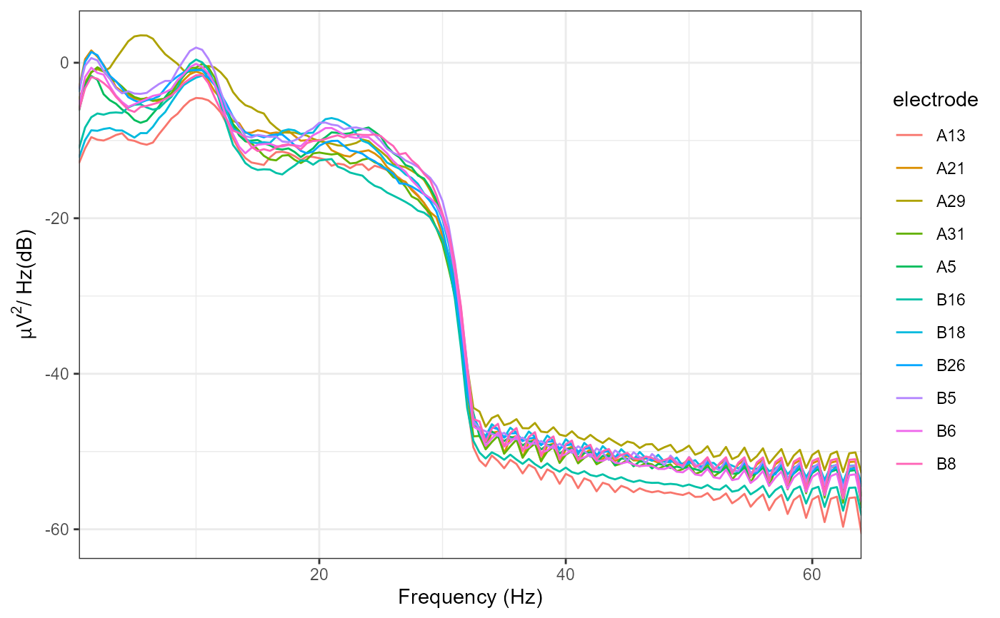
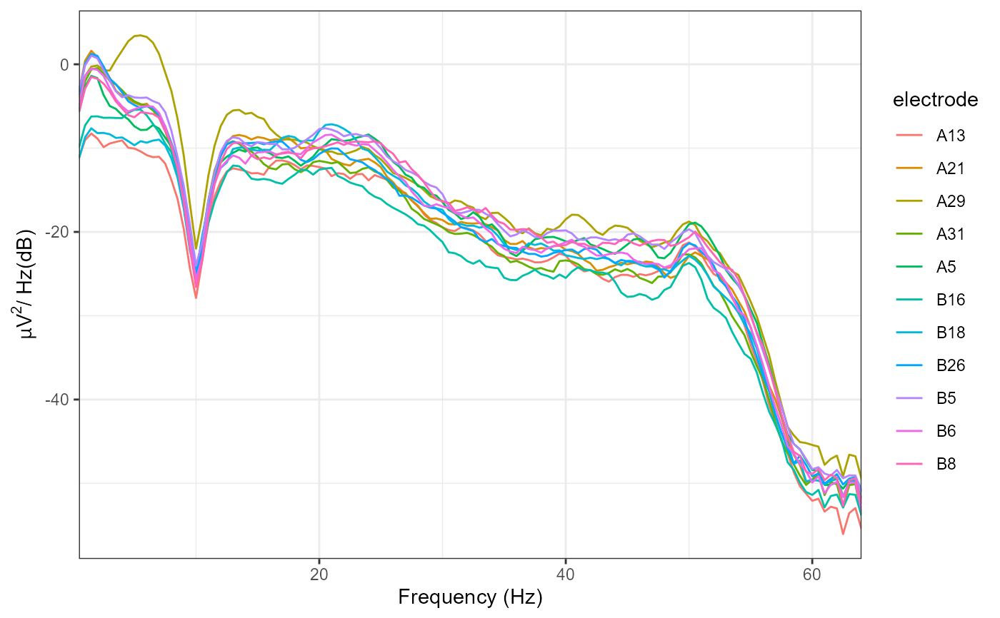
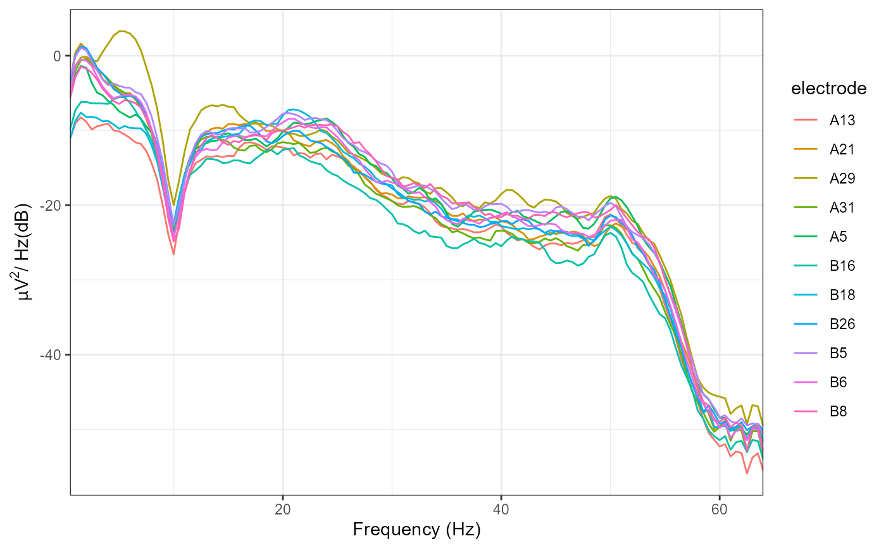

Perform IIR or FIR filtering on input EEG data of class eeg_data or
eeg_epochs. WARNING: with epoched data, epoch boundaries are currently
ignored, which can result in minor edge artifacts.
eeg_filter(data, ...)
# S3 method for class 'eeg_data'
eeg_filter(
data,
low_freq = NULL,
high_freq = NULL,
filter_order = "auto",
trans_bw = "auto",
method = "fir",
window = "hamming",
demean = TRUE,
...
)
# S3 method for class 'eeg_epochs'
eeg_filter(
data,
low_freq = NULL,
high_freq = NULL,
filter_order = "auto",
trans_bw = "auto",
method = "fir",
window = "hamming",
demean = TRUE,
...
)
# S3 method for class 'eeg_group'
eeg_filter(
data,
low_freq = NULL,
high_freq = NULL,
filter_order = "auto",
trans_bw = "auto",
method = "fir",
window = "hamming",
demean = TRUE,
...
)An eeg_data or eeg_epochs object to be filtered.
Additional parameters.
Low cutoff frequency.
High cutoff frequency.
Defaults to "auto", which automatically estimates filter order for the specified filter characteristics (defaults to 4 if method = "iir").
Transition bandwidth of the filter. "auto" or an integer. "auto" attempts to determine a suitable transition bandwidth using the heuristic given below. Ignored if method = "iir".
"fir" (Finite Impulse Response) or "iir" (Infinite Impulse Response). Defaults to "fir".
Windowing function to use (FIR filtering only). Defaults to "hamming"; currently only "hamming" available.
Remove DC component (i.e. channel/epoch mean) before filtering. Defaults to TRUE.
An object of the original class with signals filtered according to the user's specifications
low_freq and high_freq are the low and high cutoff frequencies. Pass low freq or high freq alone to perform high-pass or low-pass filtering respectively. For band-pass or band-stop filters, pass both low_freq and high_freq.
If low_freq < high_freq, bandpass filtering is performed.
If low_freq > high_freq, bandstop filtering is performed.
Note that it is recommended to first zero-mean the signal using either channel means or by-channel epoch means.
The function allows parallelization using the future package, e.g. using
plan(multisession)
Finite Impulse Response (FIR) filtering is performed using an overlap-add FFT method. Note that this only performs a single-pass; the data is shifted back in time by the group delay of the filter to compensate for the phase delay imposed by the linear filtering process. Infinite Impulse Response (IIR) filtering is performed using a two-pass (once forwards, once reversed) method to correct for phase alignment. Note that the Butterworth filter designs used here can become numerically unstable with only a small increase in filter order. For most purposes, use FIR filters.
plot_psd(eeg_filter(demo_epochs, low_freq = 1, high_freq = 30))
#> Band-pass FIR filter from 1 - 30 Hz
#> Transition bandwidth: 1 Hz
#> Filter order: 424
#> Removing channel means per epoch...
#> Removing channel means per epoch...
#> Computing Power Spectral Density using Welch's method.
#> FFT length: 256
#> Segment length: 84
#> Overlapping points: 42 (50% overlap)

plot_psd(eeg_filter(demo_epochs, low_freq = 12, high_freq = 8))
#> Band-stop FIR filter from 8 - 12 Hz.
#> Transition bandwidth: 2 Hz
#> Filter order: 212
#> Removing channel means per epoch...
#> Removing channel means per epoch...
#> Computing Power Spectral Density using Welch's method.
#> FFT length: 256
#> Segment length: 84
#> Overlapping points: 42 (50% overlap)

plot_psd(eeg_filter(demo_epochs, low_freq = 12, high_freq = 8, method = "iir"))
#> Band-stop IIR filter from 8 - 12 Hz.
#> Effective filter order: 4 (two-pass)
#> Removing channel means per epoch...
#> Removing channel means per epoch...
#> Computing Power Spectral Density using Welch's method.
#> FFT length: 256
#> Segment length: 84
#> Overlapping points: 42 (50% overlap)
